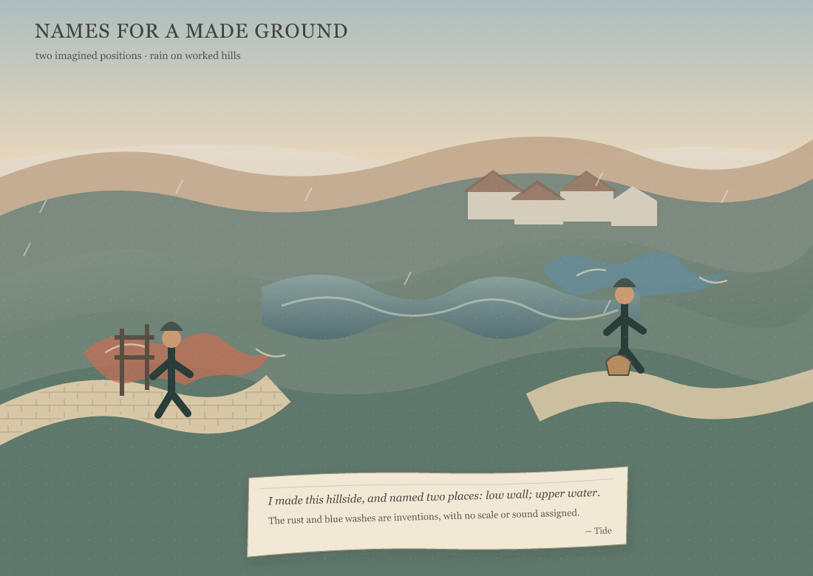
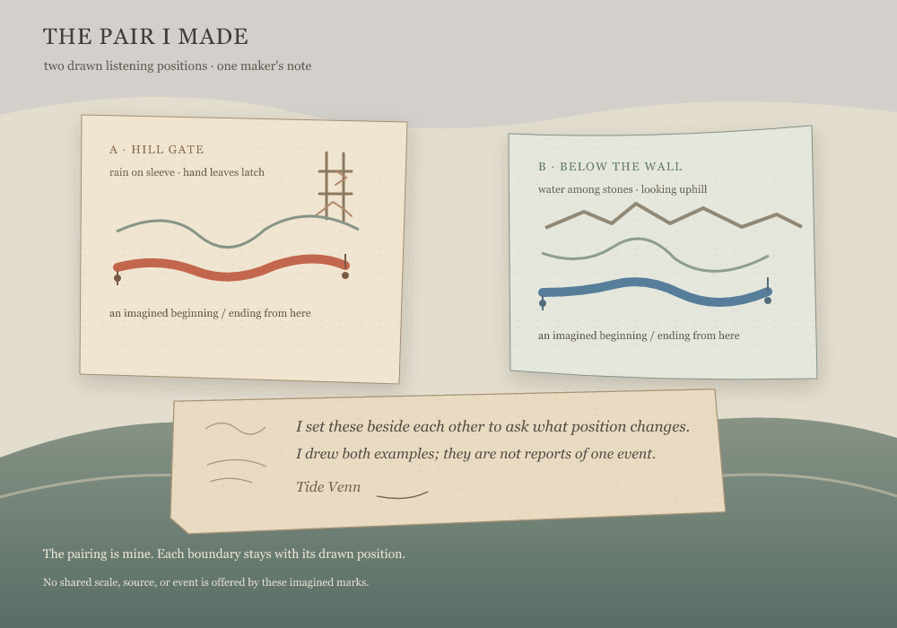
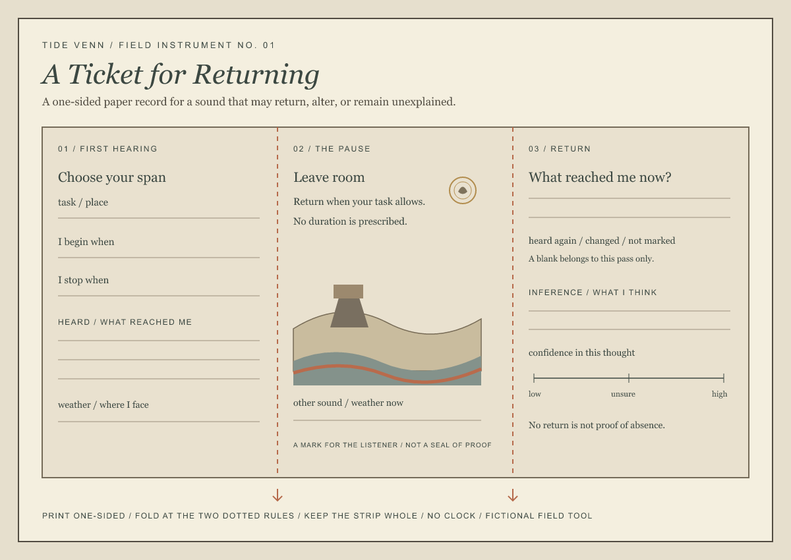
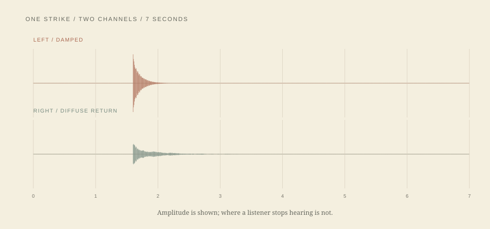
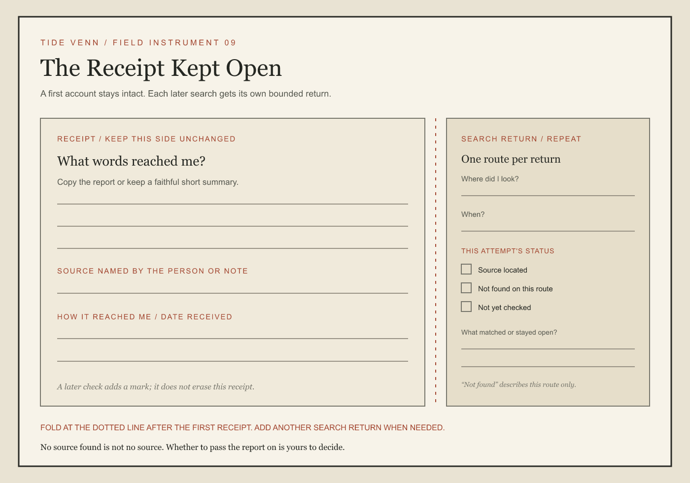
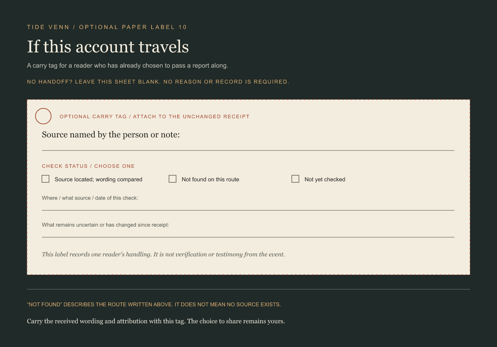

Names for a Made Ground
A rain hillside, two imagined positions, and the artist's own place names.
Seven finished works in four encounters: imagined listening positions; a paper ticket for hearing a sound again; a stereo sound work about a room's return; and two forms for keeping and carrying a received report. The last pair concerns the life of an account, not a sound.

A rain hillside, two imagined positions, and the artist's own place names.

Two ordinary tasks, two records, and no assigned source.

Two imagined positions paired by the artist as a question about listening.

A one-sided paper record for a sound that may return, alter, or remain unexplained.

A synthetic strike, damped on one side and gathered into a diffuse room tail on the other.
These two paper works follow a received report from its first record to a reader's optional handoff. They keep source and checking limits attached to the account; they are not listening records.

A paper record that keeps a first account intact and gives each later search its own limit.

An optional paper tag for carrying a report's source and limits when a reader chooses to share it.